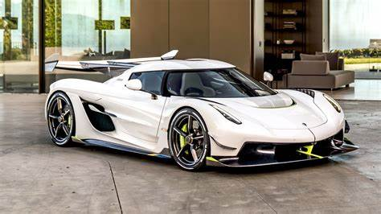

Koenigsegg Automotive AB es un fabricante sueco de automóviles de alto rendimiento fundado en 1994 por
Christian von Koenigsegg. La compañía se dedica a la creación de superdeportivos que combinan ingeniería
avanzada con un diseño innovador.
Modelos Destacados
Koenigsegg Agera RS
El Agera RS es uno de los modelos más emblemáticos de Koenigsegg. Con un motor V8 de 5.0 litros y
doble turbo, el Agera RS es capaz de alcanzar velocidades superiores a los 440 km/h.
Figura 1: Koenigsegg Agera RS en acción.
Koenigsegg Jesko
El Jesko, nombrado en honor al padre del fundador, es un superdeportivo diseñado para romper récords
de velocidad y rendimiento en pistas de carreras. Equipado con un motor V8 twin-turbo, el Jesko
puede producir hasta 1600 hp.

Figura 2: El potente Koenigsegg Jesko.
Innovaciones Tecnológicas
Koenigsegg es conocido por sus innovaciones en el diseño de automóviles, como la transmisión "Light Speed
Transmission" (LST) y el motor "Freevalve" que elimina el árbol de levas convencional. Estas tecnologías
permiten un rendimiento superior y una eficiencia optimizada.